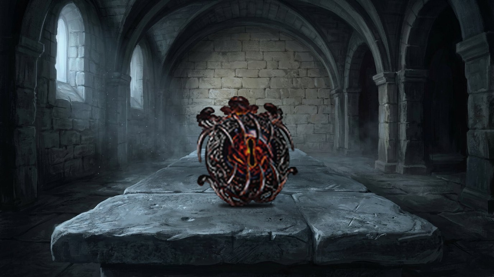

1920 × 1080 ↗The split you asked for: the stage is painted, the item never is. Each plate is one simple empty room — a stone table, a wall behind it, a key light from the upper left — and the real Path of Exile 1 item stands on that table. The room lights it and it darkens the table it stands on, so the two read as one photograph instead of an item pasted onto a backdrop.
What makes the item belong: it is tinted by the table's key light and cooled on its shadow side, its own colour is pulled a few percent toward the room, it sits on a contact shadow where it meets the stone with a softer cast shadow falling to the right, and its base is darkened where the table meets it. Sizes are given as a share of frame height. Click any plate for full size.